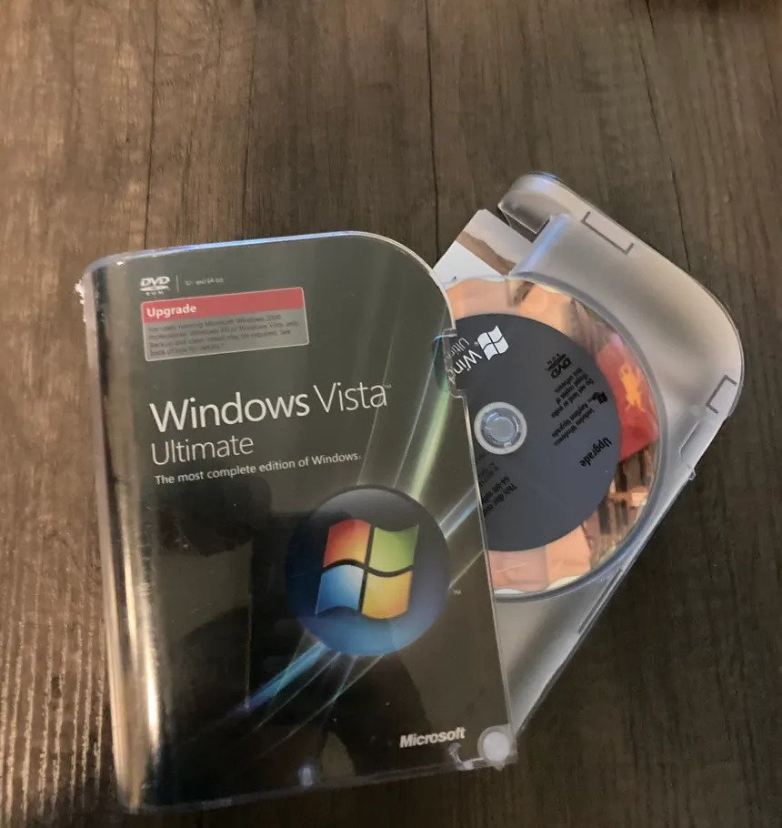
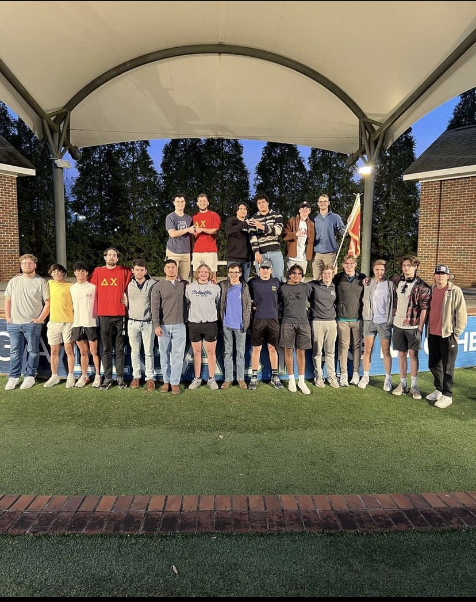
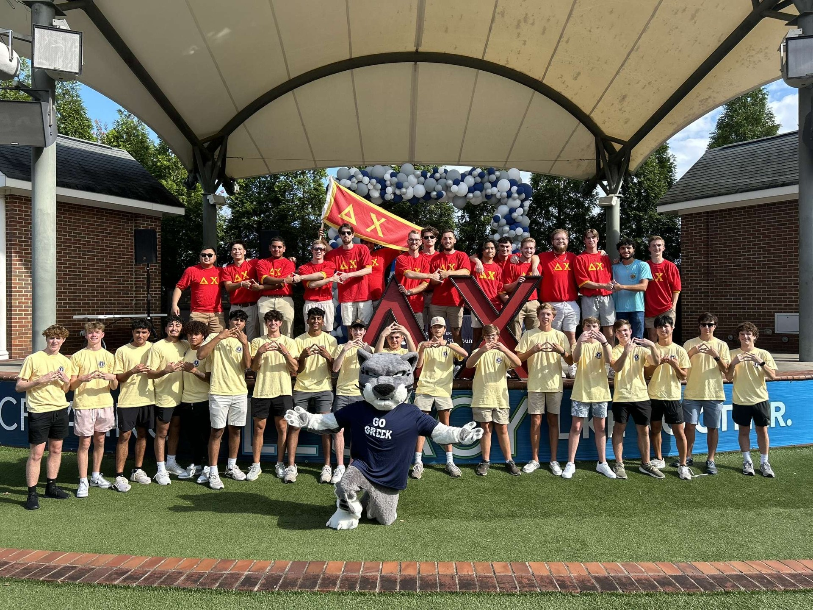

Learn About Me
I've been highly interested in technology and computers ever since, Santa or more parents depending on who you ask got our family a Desktop computer running on Windows Vista. Despite Windows Vista undoubtedly being one of the weaker iterations of Windows still blew the mind of 4 year old me. This Windows Vista machine also came bundled with a now archaic application you may be familiar with; Internet Explorer. After quickly learning how to use it, I was instantly hooked, and thus began my love and passion for computers.
Being the naive 4-year-old who just learned about the Internet with no knowledge of malware would inadvertently install viruses on this poor computer at least once a week. The responsibility of fixing the mess I created would typically be my dad' s and as this pattern continued I at some point started to 'fix' the computer before Dad got home from work. Despite this never working, it helped me learn a lot about Computers at a young age and also sparked my lifelong passion for Cyber Security.
Almost a decade later I had to decide which College I wanted to go to and also what I wanted to spend the rest of my doing as high school was coming to an end. For most, this decision can be very difficult and anxiety-inducing however for me it wasn't as in my mind I already knew that I wanted to do Cyber Security as it was something I've been interested in my whole life and was good at. Now a little over a year later I'm now a Sophomore studying at Augusta University majoring in Cyber Security with a minor in Computer Science.
Despite only being a student at Augusta University for only little over a year, I've been able to expand upon my knowledge in both Cyber Security and Computer Science through the courses I've taken and now have a firm grasp of both Computer Science and Cyber Security I've taken. Before coming to college I had no idea how to program and now a year later I'm coding almost every day both at school and outside of school for fun. I've been able to use what I've learned to build real-world projects such as this website and also have used coding to automate the way I use computers.
Personal BlogAfter taking a course about HTML and CSS I quickly got started on my personal website and moreover, my blog. Here you'll find a variety of posts primarily related to cybersecurity and computer science. If you are a student at Augusta University studying at the School of Computer and Cyber Sciences, I'd implore you to at least browse and take a look at my blog as it contains an assortment of resources that will help you succeed in your studies. I try to post at least once a day and have just started to make posts for it so I may seem a little empty. However, I can assure in no time it will be filled to the brim with blog posts
After taking several coding courses each semester I've developed several projects both inside and outside of class which you can view on my blog. For blog posts where I showcase projects I've done, I break down the code line by line describing what happens each step of the way. I remember when I first started coding no matter the language how difficult it was to come up with projects that I could do with the knowledge I had that were also interesting which is why I post the things I make to my blog.
Delta Chi Augusta Chapter
 Not long after starting my first semester here at Augusta University, I would rush and then later join the Augusta Chapter of Delta Chi. Despite being relatively new to our chapter I've been able to not only make life-long friends and connections but also grow as a person. Furthermore, our Chapter has given me the opportunity to grow as a leader and public speaker by voting for me to act as an officer part of our Executive Committee at the start of 2023 to serve as our Recruitment chair. These positions are voted upon by our Chapter members from a list of nominees and I was fortunate enough to get nominated and elected.
The size of Greek Life at Augusta University is much smaller than most schools and because of that, we lack both the numbers and resources these chapters have. Considering this, the responsibility of budgeting events, reaching out to potential new members, tabling, and organizing all the rush-related events our Chapter held during Rush week were solely my own. As you can imagine, balancing all of these responsibilities with a full course load at times was difficult however I'm grateful for this experience as it taught me many invaluable life skills and how to effectively manage my time. Additionally, it also taught me how to carry myself and also how to persuade and present myself to others.
All of my hard work would pay off though as it resulted in record-breaking new member classes for both Spring and Fall Rush. During both the Spring and Fall Rush, I was able to push our Chapter's members to recruit the most potential new members out of all Greek organizations on campus with a new approach towards recruitment featuring the strategic planning of all rush-related events, targeted tabling and advertising, and personable conversations with students. I also created digital flyers, videos, and presentations to showcase our organization to potential new members and Greek life. During Fall Rush, in particular, my recruitment efforts resulted in the second-largest new member class in our Chapter's history which effectively doubled our Chapter's size. My position helped me develop several invaluable skills I will likely use in my professional career such as event planning, budgeting, marketing, public speaking, and interpersonal communication.